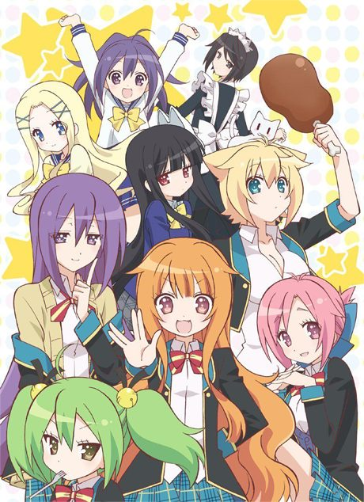

Masamune-kun's Revenge
政宗くんのリベンジ
Masamune, once bullied for being overweight, transforms himself and returns to make the girl who bullied him fall for him.
After the anime, read the manga from Chapter 51.
6.6AniList score
—Animeter, no votes yet
24episodes, 2 seasons
Rate it or report where you stopped
Filler
No filler: all 12 episodes are canon. Anime Filler List covers the first 12 of 24 episodes so far.
Episodes12
Canon12
Filler0
Mixed0
Sources: Anime Filler List
More like Masamune-kun's Revenge
 Manga Ch. 1077.3
Manga Ch. 1077.3
 Done8.1
Done8.1
 Manga Ch. 1148.1
Manga Ch. 1148.1
 Manga Vol. 47.5
Manga Vol. 47.5
 Unclear7.7
Unclear7.7
 Manga Ch. 408.4
Manga Ch. 408.4

Unclear7.0 Manga Ch. 886.9
Manga Ch. 886.9
 Manga Ch. 636.8
Manga Ch. 636.8
 Done7.7
Done7.7
VN6.9
Amagami SS Done7.9
Done7.9